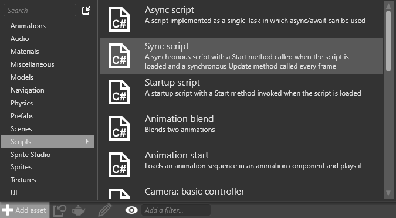
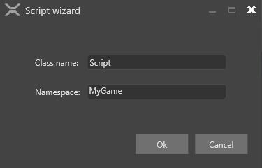
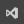
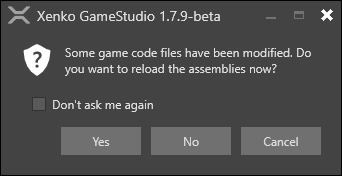

スクリプトの作成
初級 プログラマー
Game Studio または Visual Studio などの IDE を使用して、スクリプトを作成できます。
Game Studio でスクリプトを作成する
［Asset view］で、［Add asset］>［Scripts］の順にクリックし、スクリプトの種類を選択します。

Note
スクリプトの種類については、「スクリプトの種類」を参照してください。
［New script］ダイアログが開きます。

スクリプトのクラスと名前空間を指定して、［Ok］をクリックします。
スクリプトを使用するには、スクリプトを保存する必要があります。既定では、スクリプトの保存を求めるメッセージが表示されます。
スクリプトが作成されます。［Asset view］で、作成されたスクリプトを確認できます。
Note
スクリプトはアセットの一種ですが、［Assets］フォルダーには保存されません。代わりに、関連するアセンブリ フォルダーに保存されます。詳細については、「プロジェクトの構造」を参照してください。
Visual Studio で新しいスクリプトを確認することもできます。

Tip
Game Studio から Visual Studio でソリューションを開くには、Game Studio ツールバーの  (［Open in IDE］) アイコンをクリックします。
using System;
using System.Text;
using System.Threading.Tasks;
using Stride.Core.Mathematics;
using Stride.Input;
using Stride.Engine;
namespace MyGame
{
public class BasicAsyncScript : AsyncScript
{
public override async Task Execute()
{
while(Game.IsRunning)
{
// フレームごとに何かを行う
await Script.NextFrame();
}
}
}
}
Visual Studio でスクリプトを作成する
Visual Studio を開きます。
Tip
Game Studio から Visual Studio でソリューションを開くには、Game Studio ツールバーの (［Open in IDE］) アイコンをクリックします。
ゲーム ソリューションは複数のプロジェクトで構成されます。
最後が .Game のプロジェクトはメイン プロジェクトで、ゲームのロジックとスクリプトがすべて含まれています。
他のプロジェクト (MyGame.Windows、MyGame.Android など) には、プラットフォーム固有のコードが含まれます。
詳細については、「プロジェクトの構造」を参照してください。
.Gameプロジェクトに新しいクラス ファイルを追加します。そのためには、プロジェクトを右クリックし、［追加］>［新しいアイテム］を選択します。［新しい項目の追加］ダイアログが開きます。
［クラス］を選択し、スクリプトの名前を入力して、［追加］をクリックします。
新しいクラスがプロジェクトに追加されます。
作成したファイルで、スクリプトがパブリックであること、および AsyncScript または SyncScript から派生していることを確認します。
必要な抽象メソッドを実装します。
次に例を示します。
using System; using System.Text; using System.Threading.Tasks; using Stride.Core.Mathematics; using Stride.Input; using Stride.Engine; namespace MyGame { public class SampleSyncScript : SyncScript { public override void Update() { if (Game.IsRunning) { // フレームごとに何かを行う } } } }プロジェクト ファイルとスクリプト ファイルを保存します。
スクリプトを変更したので、変更を表示するにはアセンブリを再ロードする必要があります。

［Yes］をクリックします。
［Asset view］にスクリプトが表示されます。
Note
スクリプトはアセットの一種ですが、［Assets］フォルダーには保存されません。代わりに、関連するアセンブリ フォルダーに保存されます。詳細については、「プロジェクトの構造」を参照してください。